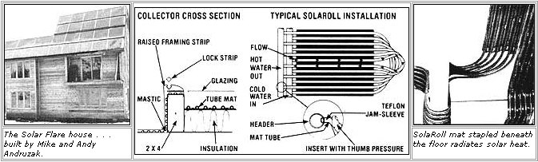

At last there's a material that'll let you build liquid-heating solar collectors that won't freeze, are efficient, and cost less than half the price of conventional equipment:
Anyone who's tried to build (or even simply install) his or her own water heating solar collector has probably had the feeling that-though such devices are efficient, do pay back the money invested in them by reducing (or eliminating) utility bills, and can, be reliable producers of hot water-there ought to be a better way to get the job done. After all, even if you ignore the initial high cost of commercial metal sun-catchers (starting at around $15 per square foot) . . . the practical matters of fitting, plumbing, sealing, flow balancing, and freeze protecting them are so complex that such tasks are often left to professionals.
But now-thanks to some innovative thinking on the part of the folks at a company called Bio-Energy Systems, Inc. there actually is-a better way to buy (and build) a collector. Rather than using expensive and hard-to-work copper, steel, or aluminum, Bio-Energy (Dept. TMEN, Box 87, Ellenville, New York 12428) has developed an extruded synthetic rubber heat absorber (with water-carrying tubes cast inside) called SolaRoll.
The EPDM (ethylene-propylene-dienemonomer) compound is molded into a mat that's 4-3/8" wide, contains six 1/5" diameter tubes, and comes in rolls of 600 linear feet. Any length (up to 100 feet) can be snipped off and used for a single pass from a cold water intake to a hot water exhaust. Thus it's possible to build a 50-foot-long collector-by laying out 50 feet of the elastomer, incorporating a 180° turn in the material, and returning-that has ail of its plumbing connections in one location!
INSTALLATION EASE
The advantages offered by SolaRoll are numerous-as you'll soon see-but perhaps the material is most amazing because it's so easy to put to use. While Bio-Energy doesn't offer complete collectors, it sells (through a growing network of dealers) all of the critical components needed to build such a device. SolaRoll distributors do offer installation service, but the company actually encourages individuals to do their own work instead . . . since the material was designed to be incredibly simple for a homeowner to use.
Bio-Energy sells EPDM edge flashing (in three different styles for various collector configurations), special predrilled headers (in copper or plastic), Teflon jam sleeves for solderless sealing at pressures of up to 100 PSI, a mastic to glue the rubber parts to the roof, and-of course-the heat-absorber matting itself. All the customer needs to supply are pressure-treated 2 X 4's for framing, insulation (1"-thick Thermax is often used), a glazing (which can vary from .025" to .125" in thickness), and a few standard hand tools.
Because the rubber components are so light, much of the construction can be done on the ground. Then-once the SolaRoll parts are laid out, trimmed, and sealed into their headers-the assembly can be lifted to the roof and glued in place.
EFFICIENT AND INEXPENSIVE
Tests conducted by the University of Connecticut's Solar Energy Evaluation Center indicate that a SolaRoll-equipped collector is every bit as effective as the average commercial unit ... with a peak efficiency rating of 73%. However, to those who will possibly be paying for such devices, the cost per BTU of heat collected is a much more interesting figure . . . and-in the dollar category-no metal collector can touch SolaRoll.
Bio-Energy's components average out at just about $6.00 for each square foot of collector (large installations work out to slightly less and smaller ones are proportionately more expensive). Once you've added the lumber, glazing, and insulation, the per-square-foot price of an owner-installed system rises to between $7.00 and $7.50 . . . a price that is from one-half to one-third that of an equivalent metal system. And, when you consider that a metal collector will need a heat exchanger or a drain-down mechanism-accessories which SolaRoll, since the EPDM compound remains flexible even at temperatures well below freezing, doesn't require-the cost difference increases. (However, SolaRoll can't be used for a domestic water supply without the addition of a heat exchanger.)
THE SOLAR FLARE HOUSE
One of MOTHER's staff members recently had the opportunity to visit a house built by Mike and Andy Andruzak . . . who own Solar Flare Company (Dept. TMEN, Box 582, Vail, Colorado 81657), the Colorado distributor for SolaRoll. All the heat for the 2,220-square-foot home is provided by a 464-square-foot SolaRoll collector on the roof, with the help of a backup wood-fired Hydro Heater that's plumbed into the same water circulation network. And remember, the dwelling is located high in the chilly Colorado Rockies!
What's more, in Mike's house-which has pretty much become a "guinea pig" on which to test his brother Andy's ideas-SolaRoll not only collects but actually distributes the necessary warmth. From a storage tank built of insulated cinder block and lined with 65-mil plastic, hot water (at about 110°F) is pumped out through copper headers and then carried beneath the home's floors by lengths of SolaRoll heatabsorber mat (functioning, in this application, as radiators) that are stapled and glued to the underside of the flooring. Andy pointed out how incredibly easy it was to install the radiant-heat SolaRoll . . . and noted that the material for the entire water-circulating system cost less than $1,000.
The Colorado pair have other schemes in mind for SolaRoll. They intend to set the material into some sidewalks in a new ski area being built. The flexible matting will be heated by a waste-oil boiler to keep the walkways clear in any weather. Of course, a fertile imagination can't help devising new schemes for the application of SolaRoll. It promises to provide one of the revolutions in solar technology that we've all been waiting for.
|
 |
|
|